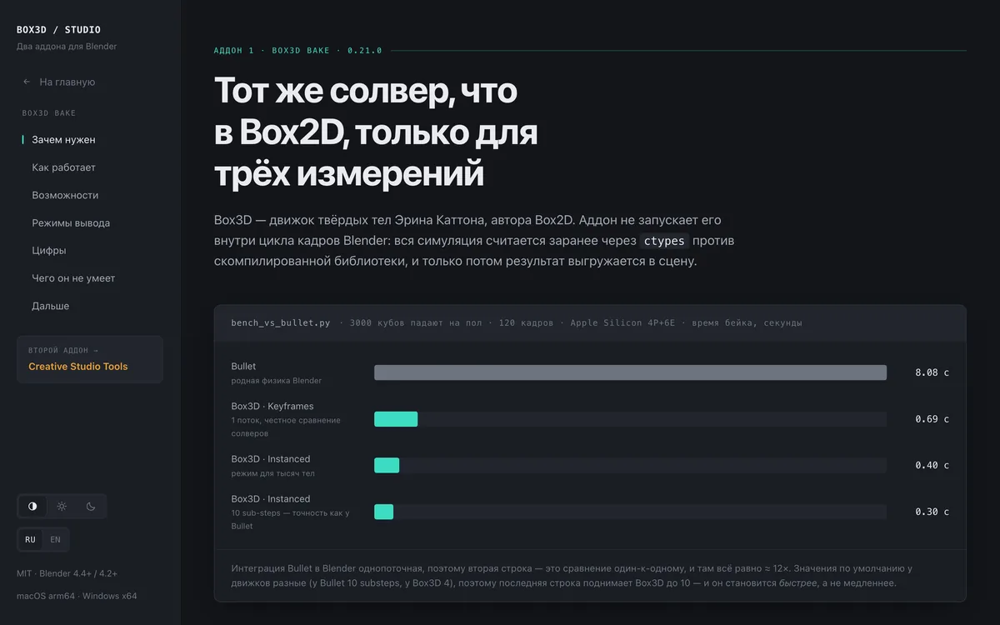
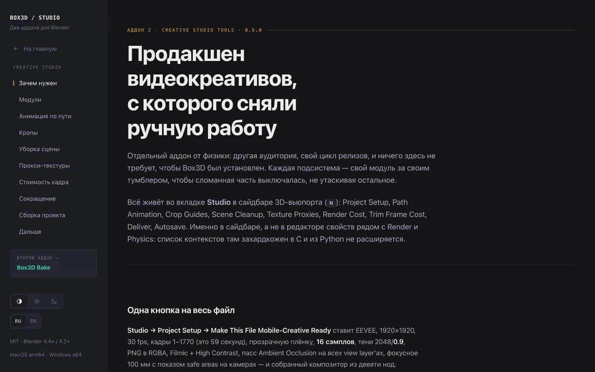
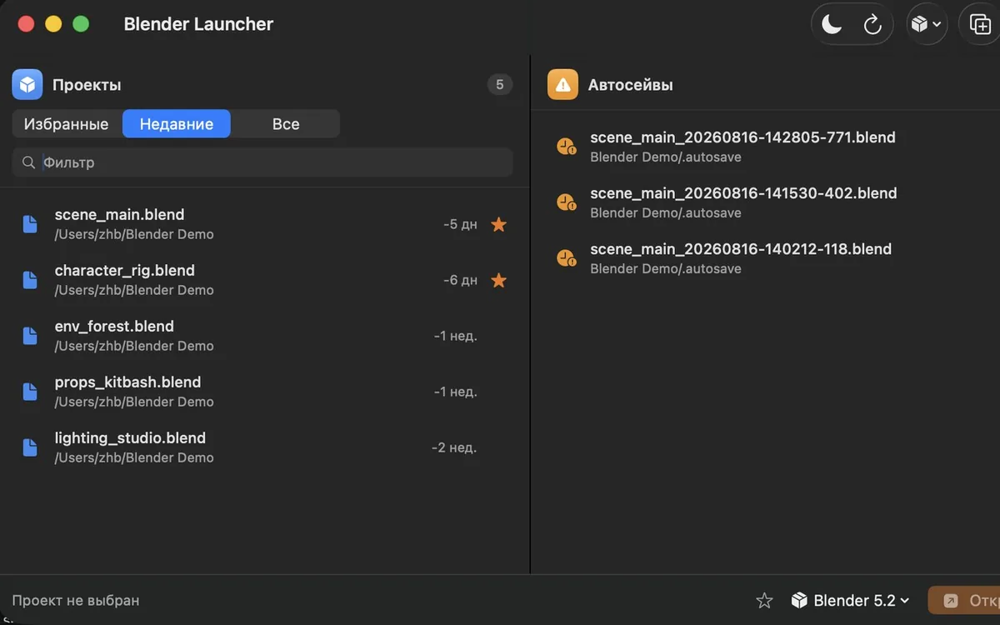
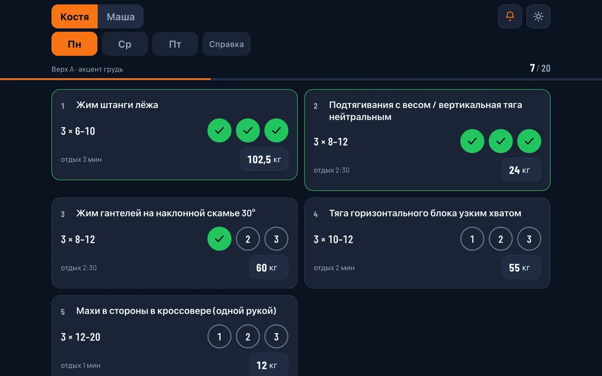
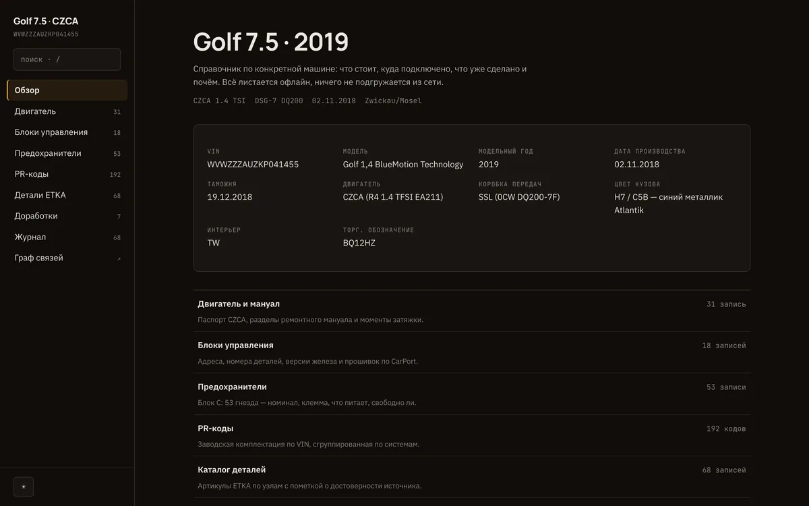
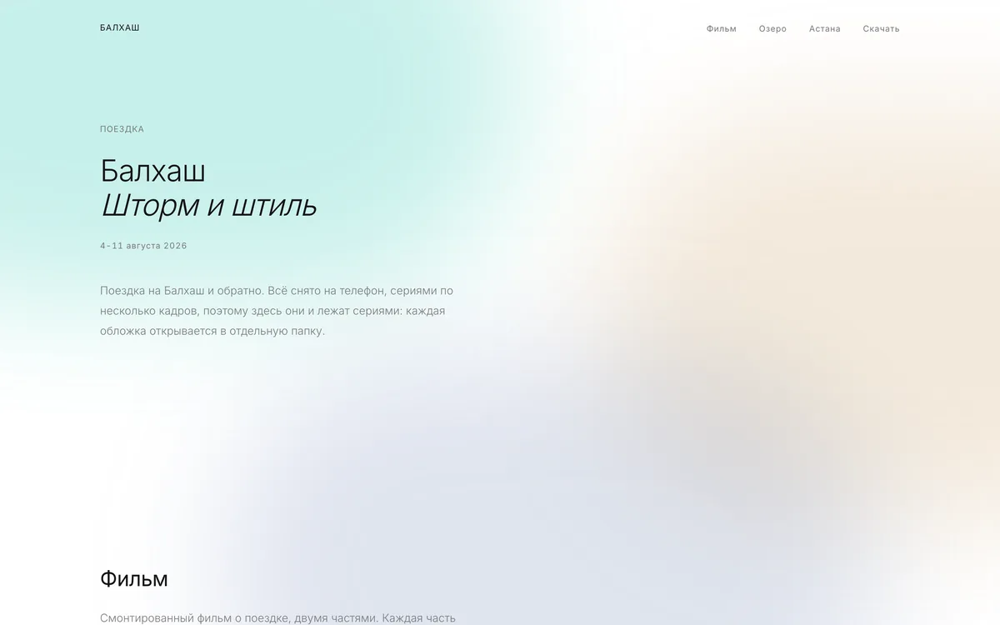
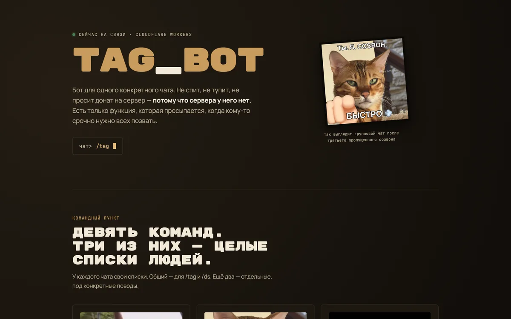
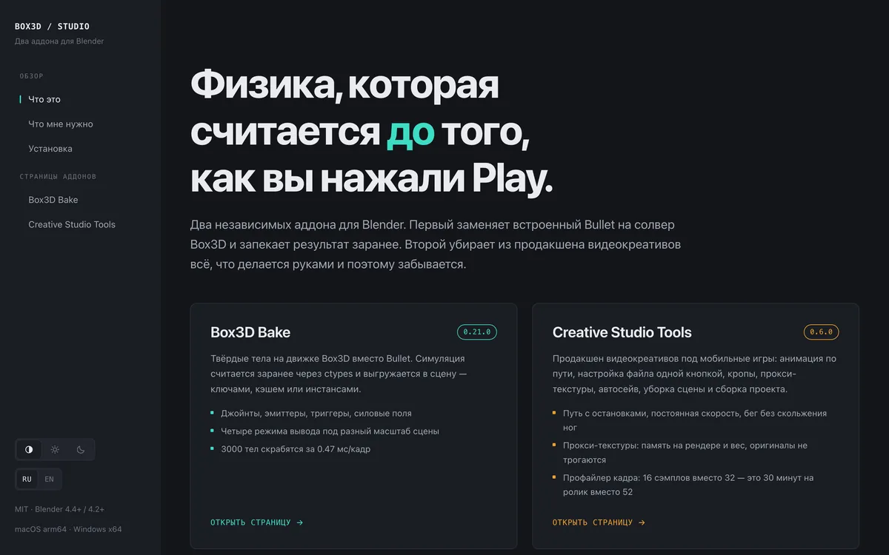
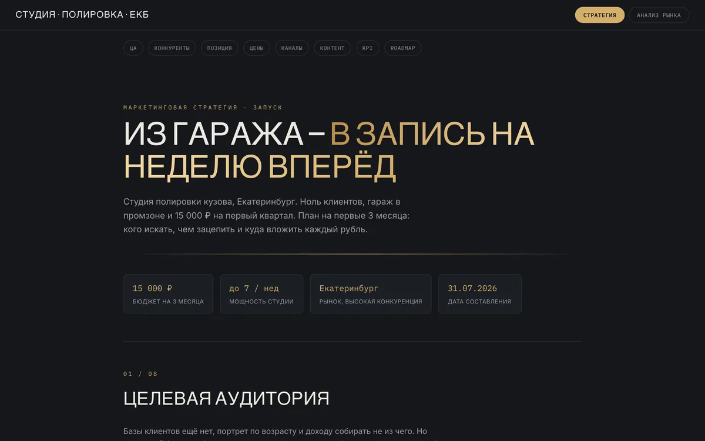

Портфолио · 2026
Делаю ролики и то, чем их делают
3D-креативы для мобильных игр: локация, персонажи, физика, композ и звук. И то, чем я их собираю: аддоны для Blender, приложения и боты. Всё своё, без форков.
Шоурил
Ролики для мобильных игр: сборка сцены, анимация, физика, композ и звук. Всё моё.






tag-bot
приватный
Бот, который зовёт всех разом. Переехал с aiogram-поллинга на webhook Cloudflare Worker и KV: сервера нет, есть функция.
crosspost-worker
приватный
Написал один раз, и ушло в Telegram, VK, Instagram и Threads. OAuth и загрузка медиа целиком внутри воркера.


Здесь пусто.